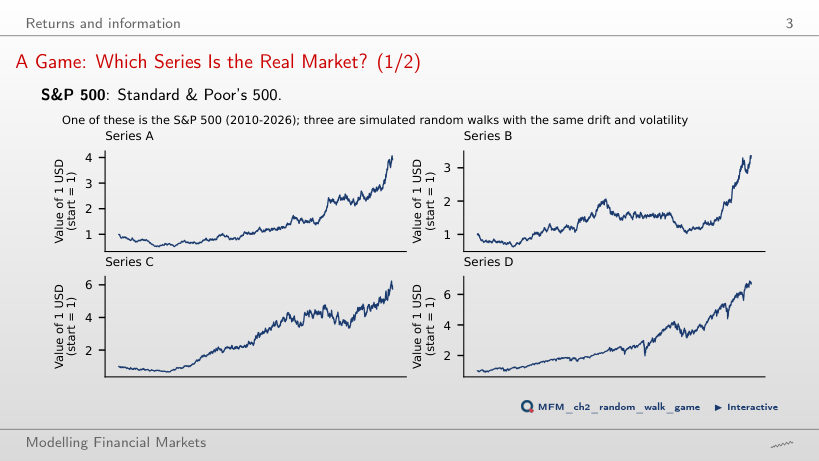
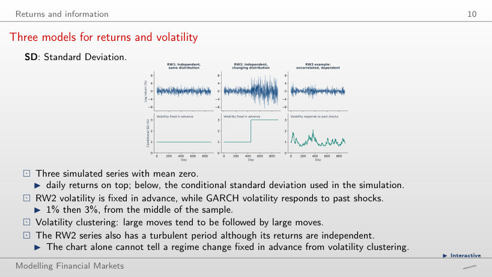
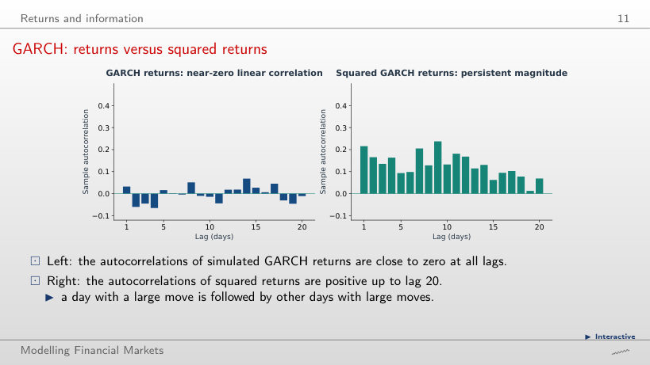
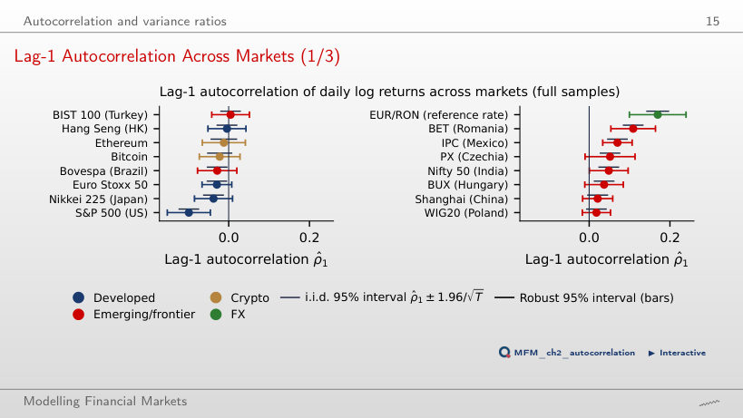
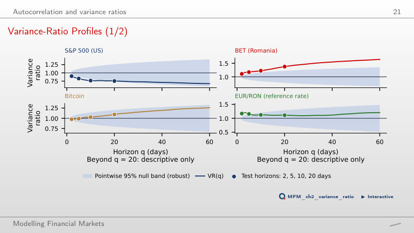
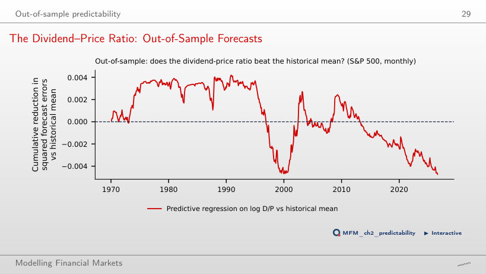
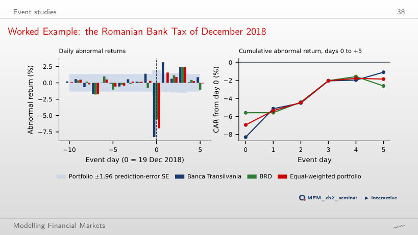
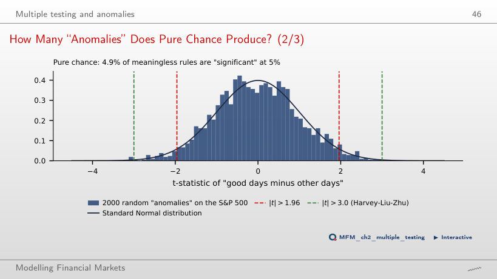

The slide of the lecture is on the left, the same figure on the right, computed in the browser from the same data. The ▶ button moves the parameter step by step.
Returns and Information · Autocorrelation and Variance Ratios · Out-of-Sample Predictability · Event Studies · Multiple Testing and Anomalies
Returns and Information
A Game: Which Series Is the Real Market?

Answer
Series D. The eye cannot tell: simulated random walks also show trends, cycles and apparent crashes. This is why efficiency is tested with statistics rather than by inspection.
Three models for returns and volatility

Answer
In RW2 volatility rises at a date fixed in advance and the returns stay independent. In GARCH today's volatility depends on yesterday's shock (α = 0.08) and on yesterday's volatility (β = 0.90), so the returns are dependent. The chart of returns alone does not tell them apart.
GARCH: returns versus squared returns

Answer
No. The lag-1 autocorrelation of the squares is 0.22 in the 900-day series, and the autocorrelations of the squares stay positive up to lag 20. The series satisfies RW3 but violates RW2: the size of today's move depends on past shocks.
Autocorrelation and Variance Ratios
Lag-1 Autocorrelation Across Markets

Answer
No, it rejects with both. The robust standard error (0.027) is more than twice the i.i.d. one (0.012), but −0.099 lies outside both intervals. The difference matters for markets such as the Euro Stoxx 50 or the Nikkei 225, where the i.i.d. interval excludes zero and the robust one contains it.
Variance-Ratio Profiles

Answer
The null band widens with q: its lower edge is 0.817 at 10 days and 0.740 at 20 days. At 20 days the value 0.753 stays inside. With fewer independent 20-day periods, the same deviation from 1 is measured less precisely.
Out-of-Sample Predictability
The Dividend–Price Ratio: Out-of-Sample Forecasts

Answer
No. For every start between 1970 and 2015, R²OS stays negative: −1.37% from 1990, −0.01% from 2000, −2.75% from 2010. The curve rises until 1990, and the 1990s boom wipes out the advantage. The Clark–West test over 1970–2026 gives t = 0.42 (p = 0.34), so the absence of predictability is not rejected.
Event Studies
Worked Example: the Romanian Bank Tax of December 2018

Answer
That the day-0 fall was almost fully recovered within a week: the CAR over days +1 to +5 is +7.2% (t = 3.82). It may be an overreaction, the effect of later news, or the rebound of the bank-dominated BET index. A single event cannot separate the three explanations.
Multiple Testing and Anomalies
How Many “Anomalies” Does Pure Chance Produce?

Answer
About 5%: 4.9% in the simulation, i.e. 98 rules. The best one has |t| = 3.19 and would even pass the 3.0 threshold if reported alone. The more rules are tried, the larger the largest |t| obtained by chance.
Stock indices, Bitcoin, Ethereum, TLV, BRD and BET: EODHD daily prices up to 18 September 2026. EUR/RON: the NBR reference rate. Monthly S&P 500 with dividends: Robert J. Shiller's public data, extended with daily S&P 500 prices; 3-month Treasury bill rate from FRED (TB3MS).